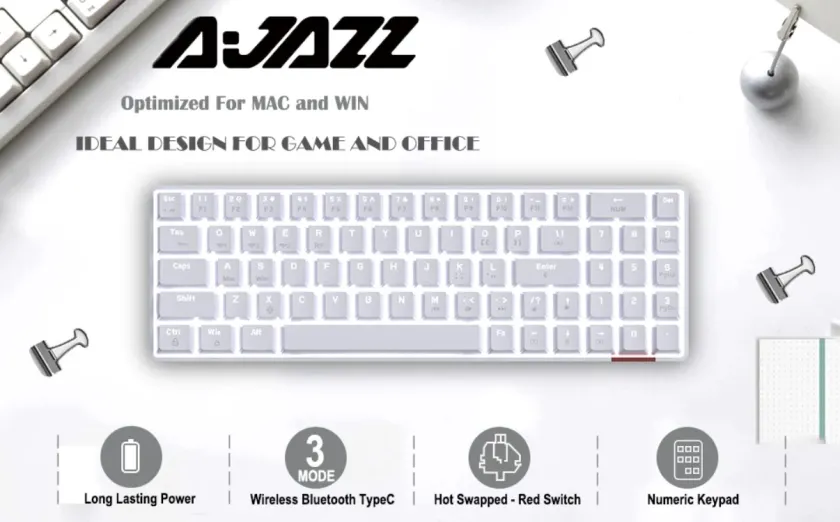

- Modalità RGB
- Connettività flessibile
- Batteria di lunga durata
- Dimensioni compatte
Di tutte le tastiere che ho recensito, probabilmente questa è (fino ad ora), quella che mi ha convinto di più. Unisce un’ottima qualità costruttiva ad eccellenti prestazioni, senza tralasciare il ventaglio di connessioni disponibili.
Il design estremamente compatto porta inevitabilmente ad una disposizione particolare del layout dei tasti, ma nulla a cui non ci si possa abituare con poche ore di utilizzo.
Tenendo presente anche il prezzo, estremamente interessante, posso certamente dire che ci troviamo davanti ad un best buy nella sua categoria.